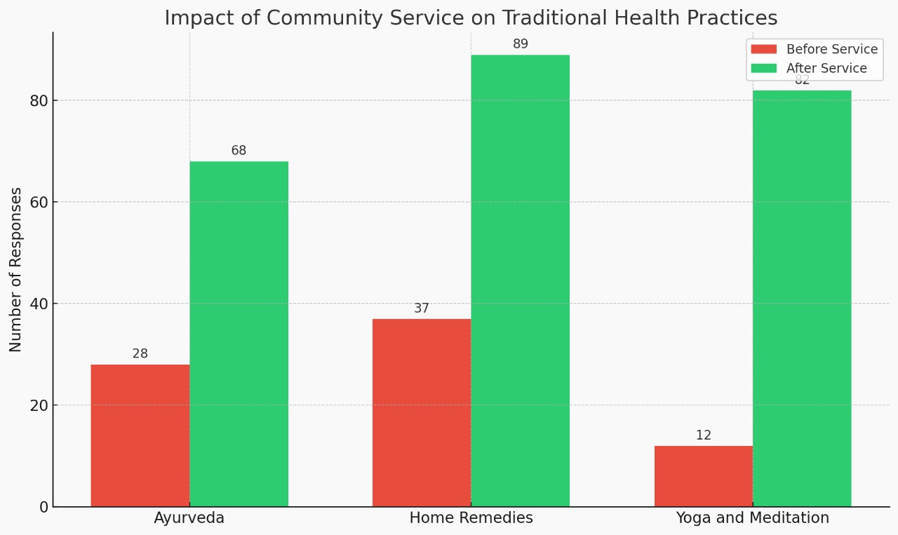
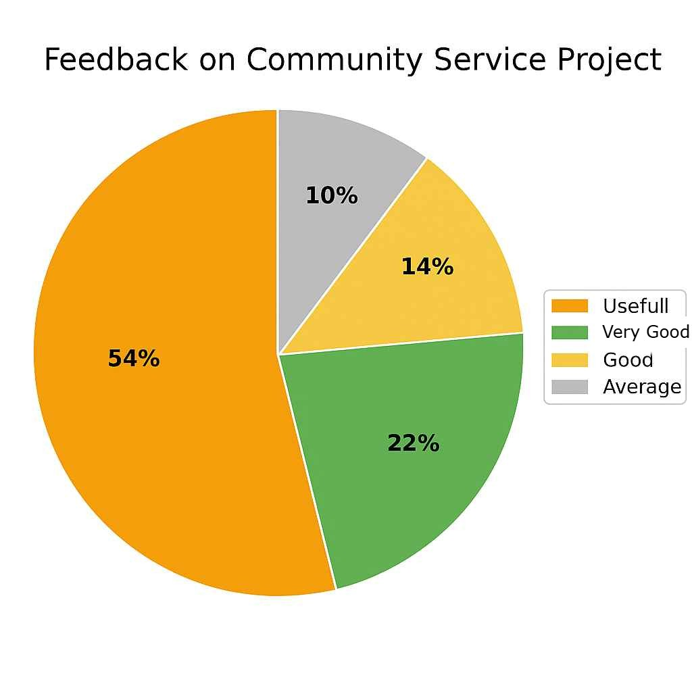

| S.No | Name | Age | Problem | Cause | Medicine Usage | Solution |
|---|---|---|---|---|---|---|
| 1 | Radhamma | 51 | Diabetes | Irregular diet | Yes – Tablets | Chyawanprash, Fenugreek, Bitter gourd juice |
| 2 | Latha | 61 | Poor immunity | Digestive weakness | No | Triphala churna, Amla juice |
| 3 | Geetha | 40 | Allergies | Dust, weak lungs | Yes – Inhaler | Sitopaladi churna, Tulsi steam |
| 4 | Prasanna | 53 | Urinary infection | Bacterial, dehydration | Yes – Tablets | Chandraprabha Vati, Punarnava |
| 5 | Savithri | 61 | Indigestion | Overeating, spicy food | Yes | Trikatu churna, Hingvashtak |
| 6 | Sumathi | 55 | Liver issues | Alcohol, excess medicines | Yes – Tablets | Bhumi amalaki, Kutki |
| 7 | Radha | 56 | Joint pains | Lack of lubrication | No | Rasna churna, Mahanarayana oil, Warrior 2 |
| 8 | Padma | 63 | High BP | Stress, salty diet | Yes – Tablets | Ashwagandha, Brahmi, Bala oil |
| 9 | Manisha | 47 | Knee pain | Cartilage damage | No | Ayurvedic massage, Castor oil, Hero Pose |
| 10 | Prasuna | 58 | Headache | Stress, dehydration | Yes – Balm | Peppermint oil, Tulsi tea |
| S.No | Name | Age | Problem | Cause | Medicine Usage Status | Solutions |
|---|---|---|---|---|---|---|
| 1 | Lakshmi | 37 | Acidity | Spicy food, overeating | No | Jeera water, Banana, Buttermilk |
| 2 | Prasanna | 41 | Toothache | Gum infection | Yes – Tablets | Saltwater rinse, Clove oil |
| 3 | Prameela | 42 | Skin rashes | Allergy | Yes – Ointment | Coconut oil, Neem paste |
| 4 | Sulochana | 34 | Hair fall | Stress | No | Onion juice, Dates |
| 5 | Yasodha | 39 | Cold and cough | Weather changes | Yes – Tablets | Ginger tea, Steam |
| 6 | Savitri | 45 | Sore throat | Dry air | No | Turmeric milk, Gargle |
| 7 | Sumathi | 30 | Menstrual cramps | Hormonal | Yes – Tablet | Hot water bag, Child pose |
| 8 | Sukanya | 35 | Headache | Stress | Yes – Balm | Head massage, Tulsi tea |
| 9 | Laxmi | 31 | Pimples | Oily skin | Yes – Ointments | Aloe vera, Ice cubes |
| 10 | Vijaya | 46 | Fatigue | Low iron | No | Lemon water, Pranayama |
| S.No | Name | Age | Problem | Cause | Medicine Using | Solution |
|---|---|---|---|---|---|---|
| 1 | Lasya | 13 | Stress | Academic pressure, competition | No | 1. Deep breathing 2. Child pose 3. Warm milk, almonds |
| 2 | Poojitha | 12 | Exam anxiety | High expectations, fear of failure | No | 1. Sukhasana 2. Yoga asanas 3. Fresh fruits, nuts |
| 3 | Deepika | 14 | Lack of concentration | Poor sleep, overuse of gadgets | No | 1. Tree pose 2. Padmasana 3. Walnuts, soaked almonds |
| 4 | Harika | 10 | Frequent headaches | Eye strain, dehydration | Yes - pain killers | 1. Neck rolls 2. Candle meditation 3. Water-rich fruits, tea |
| 5 | Lahari | 14 | Vision problems | Poor lighting, screen exposure | Yes - spectacles | 1. Eye gaze/blinking 2. Eye relaxation meditation 3. Carrots, vitamin A foods |
| 6 | Aryan | 12 | Lack of physical activity | Gadgets, urban lifestyle | No | 1. Surya namaskar 2. Bow pose 3. Millets, sweets |
| 7 | Devansh | 13 | Weight gain (obesity) | Inactive, junk food | No | 1. Surya namaskar 2. Boat pose 3. Leafy veg, dal soup |
| 8 | Adharsh | 9 | Weight loss (underweight) | Fast metabolism | No | 1. Cobra pose 2. Stress-release meditation 3. Ghee, rice, banana |
| 9 | Siddhu | 14 | Short height concerns | Nutrients, genetics | Yes - skipping, yoga | 1. Tadasana 2. Triangle pose 3. Protein food, dry fruits |
| 10 | Jayanth | 12 | Anger/Irritability | Hormonal changes | No | 1. Child pose 2. Alternate nostril breathing (Nadi Shodhana) 3. Curd, avoid spicy food |
Community Awareness Program on Traditional Health Care Methods
సాంప్రదాయ ఆరోగ్య పద్ధతులపై కమ్యూనిటీ అవగాహన కార్యక్రమం - అభిప్రాయ ఫారమ్

